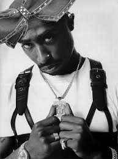

Tupac Shakur: The Voice of the Struggle
Tupac Shakur was a revolutionary artist who blended social activism with his powerful hip-hop lyrics. He tackled issues such as racism, poverty, and police brutality, making his work highly influential in both music and politics.
Key Moments in Tupac's Career
- 1991: Tupac releases his debut album "2Pacalypse Now," which garners attention for its powerful commentary on societal issues.
- 1994: Shakur's acting career flourishes alongside his music career, making him an icon in multiple industries.
- 1996: Tupac releases "All Eyez on Me," a landmark hip-hop album.
